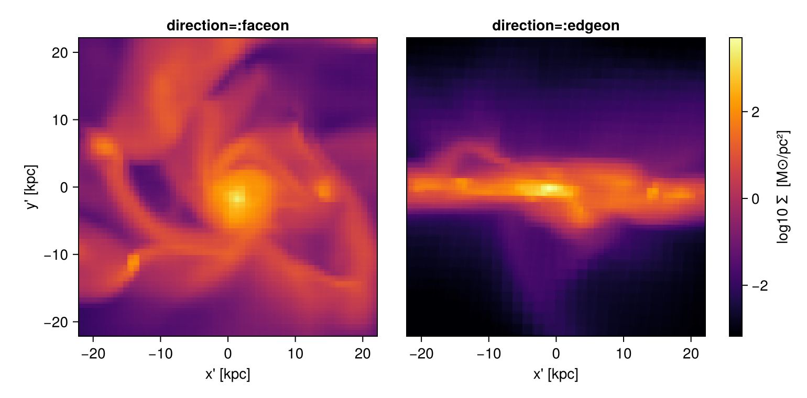
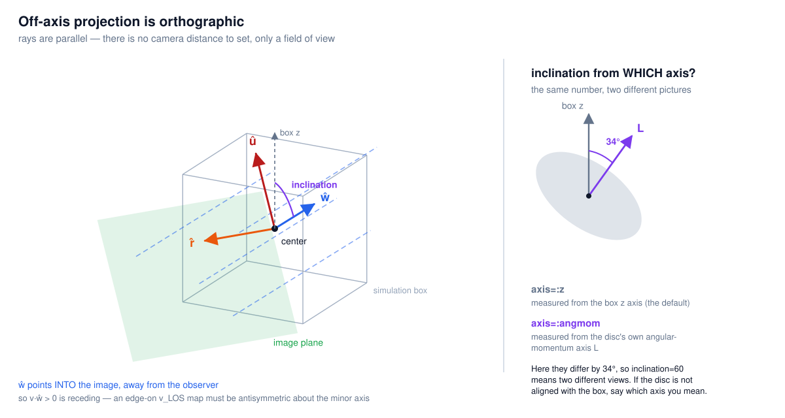
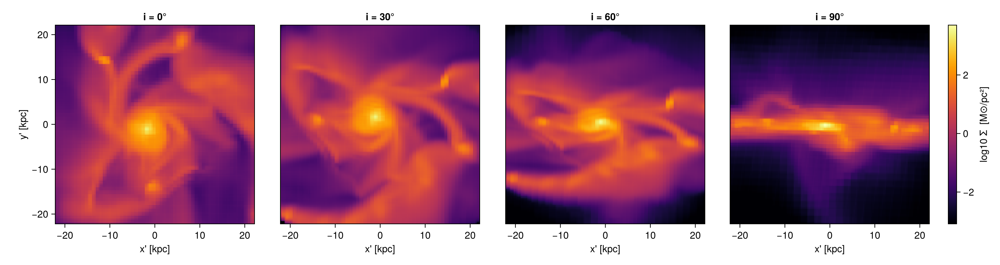
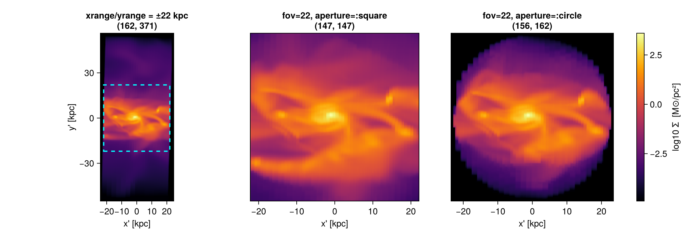
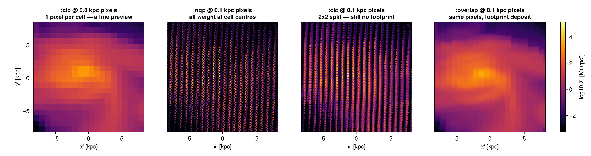
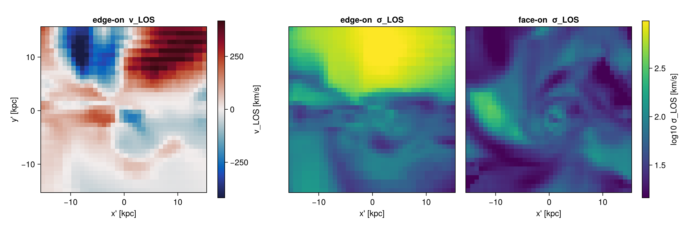
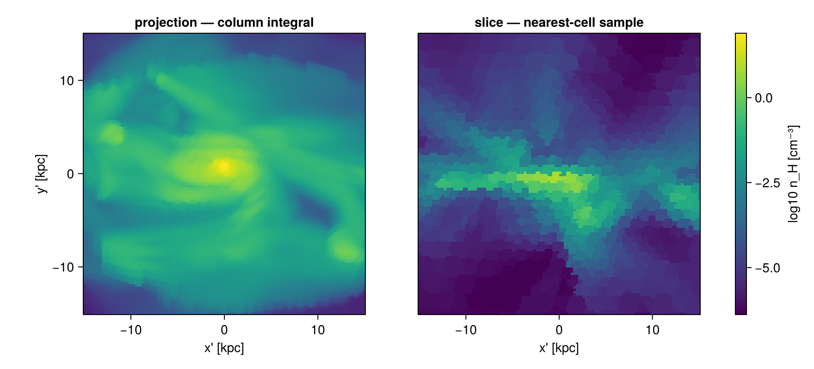
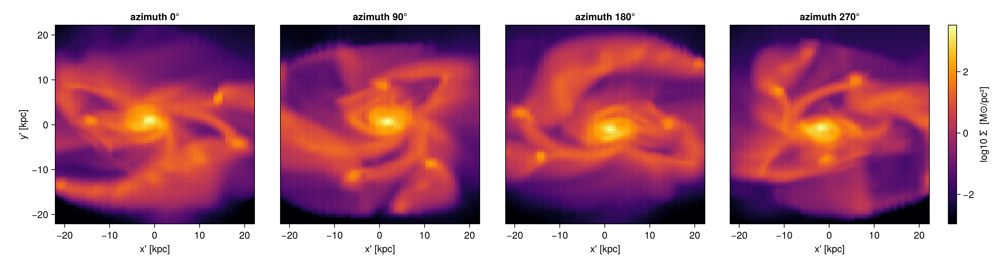
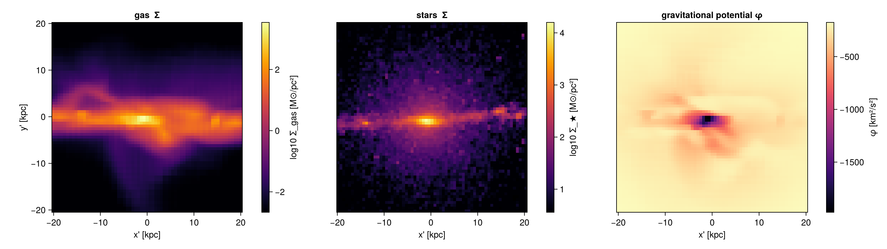

0. Off-axis projection — what this page gives you
This page is also an executable Jupyter notebook — open / download 06_offaxis_Projection.ipynb. The notebooks run end-to-end and double as part of Mera's test suite.
Title + scope card. Prose:
"Every map on this page comes out of one function call: projection(obj, var, unit; <view>, <framing>, <binning>, <pxsize>). Off-axis adds exactly one thing to the axis-aligned page: orientation. Everything you already know — center, range_unit, pxsize, weighting, units — works unchanged."
Five knobs table (one row each, no elaboration — each gets a chapter): | knob | keywords | chapter | |–-|–-|–-| | view | direction · inclination/azimuth/axis · los · theta/phi | 1, 3 | | framing | fov/fov_unit/aperture · xrange/yrange/zrange+center | 4 | | quantity | var/unit lists · weighting | 5 | | placement | binning (the default is already the accurate one) | 6 | | output | m.maps, getextent, camera metadata | 1, 10 |
Contract line, stated up front and honestly: one dataset (RAMSES/spiral_clumps output 100, ~590 k cells, levels 5–7, 100 kpc box), 13 code cells, 20 hydro projection calls, 9 figures. Measured end-to-end wall clock at julia -t 8: ****≈ 90 s** end-to-end at julia -t 8 (19 code cells, ~30 hydro projection calls)**.
Pointer: full limitations table is Appendix A; nothing on this page is a forward reference to it.
1. Your first off-axis view
"A projection is a camera. The data never moves — only the camera does. Two keywords prove it."
Then, BEFORE the code, the first of the three admitted inline caveats:
`:faceon`/`:edgeon` (and `axis=:angmom`) derive the orientation from the **angular momentum of the loaded data about `center`**. `center` defaults to `[0.,0.,0.]` — the box **corner** — and L about a corner is dominated by the lever arm of the whole box. You get a plausible-looking tilted galaxy, no error and no warning. Always pass `center=[:bc]` (or the object's own centre). Detection: edge-on, `:vlos` must be antisymmetric about the minor axis (Chapter 7).# Example-data root. Point this at your own simulation folder, or set the
# MERA_EXAMPLES environment variable; every path below is built from it.
MERA_EXAMPLES = get(ENV, "MERA_EXAMPLES", "/Volumes/FASTStorage/Simulations/Mera-Tests");
using Mera, CairoMakie, Statistics
CairoMakie.activate!(type="png")
info = getinfo(100, joinpath(get(ENV, "MERA_TEST_DATA", MERA_EXAMPLES),
"RAMSES/spiral_clumps"), verbose=false)
gas = gethydro(info, verbose=false, show_progress=false)
println("cells loaded : ", length(gas.data))
println("box length : ", info.boxlen, " kpc")
println("levels : ", gas.lmin, " – ", gas.lmax)
println("threads : ", Threads.nthreads())
*__ __ _______ ______ _______
| |_| | | _ | | _ |
| | ___| | || | |_| |
| | |___| |_||_| |
| | ___| __ | |
| ||_|| | |___| | | | _ |
|_| |_|_______|___| |_|__| |__|
Mera v1.8.0
cells loaded : 590311
box length : 100.0 kpc
levels : 3 – 7
threads : 4# ── figure code from here: panels, overlays, colorbars — no new Mera concepts ──
# ONE helper, used by every figure in this notebook. It encodes the rules that make a
# comparison honest: physical axes in kpc, DataAspect, no interpolation, an explicit
# NaN colour, and an optional SHARED colour range.
function showmap!(ax, m, key; logscale=true, cmap=:inferno, crange=nothing)
A = Float64.(m.maps[key])
A = logscale ? log10.(replace(A, 0.0 => NaN)) : A
e = getextent(m, :kpc)
xs = range(e[1], e[2], length=size(A,1))
ys = range(e[3], e[4], length=size(A,2))
hm = heatmap!(ax, xs, ys, A; colormap=cmap, nan_color=:black, interpolate=false,
colorrange = crange === nothing ? Makie.automatic : crange)
ax.aspect = DataAspect()
return hm
end
# shared colour range across a set of maps (2nd percentile → max), so panels are comparable
function sharedrange(ms, key; logscale=true)
v = reduce(vcat, [vec(Float64.(m.maps[key])) for m in ms])
v = logscale ? log10.(filter(x -> x > 0, v)) : filter(isfinite, v)
(quantile(v, 0.02), maximum(v))
end
function maprow(ms, key, titles; clabel="log10 Σ [M⊙/pc²]", cmap=:inferno,
crange=nothing, logscale=true)
n = length(ms); fig = Figure(size=(330n + 110, 380)); hm = nothing
for i in 1:n
ax = Axis(fig[1,i], title=titles[i], xlabel="x' [kpc]",
ylabel = i == 1 ? "y' [kpc]" : "")
i > 1 && hideydecorations!(ax, grid=false)
hm = showmap!(ax, ms[i], key; logscale=logscale, cmap=cmap, crange=crange)
end
Colorbar(fig[1, n+1], hm, label=clabel)
fig
end
maprow (generic function with 1 method)# ONE window, reused by every chapter — so the only thing that changes between cells
# is the keyword being taught.
win = (center=[:bc], fov=22, fov_unit=:kpc, aperture=:square,
pxsize=[0.3, :kpc], verbose=false, show_progress=false)
fo = projection(gas, :sd, :Msol_pc2; direction=:faceon, win...)
eo = projection(gas, :sd, :Msol_pc2; direction=:edgeon, win...)
println("line of sight ŵ = ", round.(fo.los, digits=3))
println("image up û = ", round.(fo.up, digits=3))
println("projection centre (box fraction) = ", round.(fo.center, digits=3))
println("frame: ", size(fo.maps[:sd]), " and ", size(eo.maps[:sd]))
cr = sharedrange([fo, eo], :sd)
maprow([fo, eo], :sd, ["direction=:faceon", "direction=:edgeon"]; crange=cr)
line of sight ŵ = [0.011, 0.02, -1.0]
image up û = [1.0, -0.0, 0.011]
projection centre (box fraction) = [0.5, 0.5, 0.5]
frame: (147, 147) and (147, 147)
Read the output back:
m.mapsis a dict of 2-D arrays;m.maps[:sd]is the surface density inMsol_pc2.getextent(m, :kpc)returns[xmin, xmax, ymin, ymax]in the image plane — the rawm.extentis in code units, so always convert.m.los,m.up,m.cam_rightare the camera basis the call actually used;m.directionreads:offaxis.
That los = [0, 0, 1]-ish vector is not a coincidence you chose — it is the disc's angular momentum axis, computed from your data about your center. That is what makes :faceon a measurement, not a guess.
2. What a pixel contains
Before turning more knobs, it is worth being precise about what the numbers in a map are.
The camera is orthographic: every ray is parallel and the observer sits at infinity. There is no vanishing point and no perspective, so nothing in the image gets larger by being nearer.
Mera reduces whatever view you specified to a single unit vector ŵ, the line of sight, and completes it to a right-handed orthonormal camera basis (r̂, û, ŵ) — image x, image y, and the viewing direction. Those are the three vectors you read back as m.cam_right, m.up, m.los. ŵ points into the image, away from you; Chapter 7 turns that convention into a sign you can check.
A pixel value is then the integral of the requested quantity along the parallel ray through that pixel, over the whole depth of the selected data. That single sentence explains most of what follows: it is why a projection conserves mass, why zrange matters as much as xrange, and why a slice — which samples one plane instead of integrating through the volume (Chapter 8) — answers a different question.
position_angle is a roll: it rotates (r̂, û) together about ŵ. The line of sight does not move, so the scene is unchanged — but whether the frame sees the same gas depends on the aperture, and it is worth measuring rather than assuming. Rolling by 30° here leaves Σ identical to the last digit with aperture=:circle (a disc is roll-invariant) and changes it by 2.3 % with aperture=:square, because the square crop rotates inside the selection sphere and its corners sweep across different material.
One consequence deserves to be stated on its own, because the next chapter is built on it: since the projection is orthographic, moving the camera away from the galaxy changes nothing. There is no camera distance to set. The only control over what lands in frame is the width of the frame — a field of view.
The step-by-step basis construction (the deterministic choice of "up", the Gram–Schmidt completion, the roll matrix) lives in ?projection; you do not need it to use any of this.

Parallel rays, the image plane, and the camera basis (r̂, û, ŵ) planted at center. Right inset: inclination is measured from a reference axis — either the box z or the object's own angular-momentum axis L. They are not the same axis, and choosing the wrong one is the most common way to get a picture that looks right but is not.
3. Choosing the view
Observer vocabulary → Mera keywords (the primary artefact of this chapter):
| you want | you say | Mera |
|---|---|---|
| a disc seen flat / on its side | face-on / edge-on | direction=:faceon / :edgeon |
| a specific inclination i | i = 60° | inclination=60, axis=:angmom |
| a specific position angle on the sky | PA = 30° | position_angle=30 |
| a known viewing vector | ŵ = (1,1,1) | los=[1,1,1] |
| spherical camera angles | θ, φ | theta=, phi= |
| spin the object about its own axis | (no observational counterpart) | azimuth= |
azimuth rotates the object about its own spin axis. For an axisymmetric disc it is unobservable — it is a movie parameter, not a modelling one, which is why it earns no static panel here and reappears in Chapter 9.
Reference axis. axis=:z (default) tilts away from the box z-axis; axis=:angmom tilts away from the disc's own L, computed about center. axis=[vx,vy,vz] takes an explicit axis. direction=:faceon/:edgeon already imply :angmom, so combining them with axis= is an ArgumentError.
Exactly one view specifier. los | inclination/azimuth | theta/phi | direction=:faceon/:edgeon are mutually exclusive; giving two raises immediately. up= and position_angle= are modifiers and combine with any of them.
Angles are degrees by default (angle_unit=:rad to switch).
# Same window as Chapter 1 — only `inclination` changes.
lad0 = projection(gas, :sd, :Msol_pc2; inclination=0, axis=:angmom, win...)
lad30 = projection(gas, :sd, :Msol_pc2; inclination=30, axis=:angmom, win...)
lad60 = projection(gas, :sd, :Msol_pc2; inclination=60, axis=:angmom, win...)
# Is `direction=:faceon` the same as `inclination=0, axis=:angmom`? Separate the two halves of
# that question — the LINE OF SIGHT and the ROLL — because the answer differs for each.
println("max |ŵ_faceon − ŵ_inc0| = ", maximum(abs, fo.los .- lad0.los))
println("angle(û_faceon, û_inc0) = ",
round(rad2deg(acos(clamp(sum(fo.up .* lad0.up), -1, 1))), digits=2), "°")
println("max |Σ_faceon − Σ_inc0| = ", round(maximum(abs, lad0.maps[:sd] .- fo.maps[:sd]), digits=1))
# ... and the roll is recoverable exactly:
lad0_pa = projection(gas, :sd, :Msol_pc2; inclination=0, axis=:angmom, position_angle=-90, win...)
println("max |Σ_faceon − Σ_inc0,PA=-90| = ", maximum(abs, lad0_pa.maps[:sd] .- fo.maps[:sd]))
# "Exactly one view specifier" and "direction implies :angmom" are promises about behaviour:
for (lbl, kw) in (("inclination + los", (inclination=35, los=[1,1,1])),
("direction=:faceon + axis", (direction=:faceon, axis=:angmom)))
e = try (projection(gas, :sd; kw..., win...); "NO ERROR") catch e; typeof(e).name.name end
println(rpad(lbl, 26), "→ ", e)
end
ladder = [lad0, lad30, lad60, eo] # i = 90 is the edge-on map from Chapter 1
cr = sharedrange(ladder, :sd)
maprow(ladder, :sd, ["i = 0°", "i = 30°", "i = 60°", "i = 90°"]; crange=cr)
max |ŵ_faceon − ŵ_inc0| = 0.0
angle(û_faceon, û_inc0) =
90.0°
max |Σ_faceon − Σ_inc0| = 2407.1
max |Σ_faceon − Σ_inc0,PA=-90| = 4.433786671143025e-11
inclination + los
→ ArgumentError
direction=:faceon + axis
→ ArgumentError
direction=:faceon and inclination=0, axis=:angmom are the same line of sight — the two ŵ vectors agree to the last bit — but they are not the same image. A face-on view leaves the roll about ŵ undetermined, and the two code paths break that tie differently: the û vectors come out exactly 90° apart, which is why the naive map-to-map difference above is large rather than zero. position_angle=-90 recovers :faceon to floating-point round-off (the residual printed above is ~4e-11 M⊙/pc² — summation order across threads, not a real difference).
The lesson generalises past this one preset: whenever a view leaves a degree of freedom free, compare the camera vectors, not the pixels. Two correct maps of the same scene can differ by a roll.
So: pick direction=:faceon/:edgeon when you want the disc's own frame, inclination+axis=:angmom when you want a specific i, and los= when you already know the vector — for example when you want the same orientation across many snapshots (Appendix C).
4. Framing: world ranges versus camera field of view
This is the surprise that catches everyone, so take the problem first.
xrange, yrange, zrange (with center and range_unit) are world-space bounds — they select a box inside the simulation, exactly as they do for the axis-aligned path and for subregion. The camera frame is then auto-fitted to the bounding box of that region after rotation. Two consequences:
- The frame grows with tilt. A ±22 kpc world window on a 100 kpc box comes out ±55 kpc at i = 60°. Frames at different angles are not comparable, and the object appears to zoom.
- The window's own faces appear in the map as straight edges cutting across the image. Worse than cosmetic: with no
zrangethe entire box depth of foreground and background gas sits in your disc map, so any column, scale height or Σ measured from it is contaminated.
There is no line-of-sight depth slab in projection. zrange clips world z; it coincides with depth only when the line of sight is near ±z — precisely the face-on case where you need it least. (Also: an axis whose requested range already covers the loaded data's range is not clipped at all, so zrange on already-subregioned data can silently do nothing.)
The fix: fov. Because the camera is orthographic (Chapter 2), the only framing control is the width of the frame. fov selects a sphere about center (radius fov, or √2·fov for aperture=:square) — and a sphere projects to the same disc at every orientation, so the frame is fixed by construction.
aperture | selection | frame |
|---|---|---|
:circle (default) | sphere of radius fov | rectangular array with empty corners |
:square | sphere of radius √2·fov, cropped | full rectangle, pixel-identical size and scale at every angle |
Use :square whenever you will compare or animate frames.
`fov_unit` defaults to `:standard`, which is a **box fraction**. `fov=22` alone means 22 box lengths, silently clamped to 0.49·boxlen. Always write `fov=22, fov_unit=:kpc`.
Three more things `fov` does: it **replaces** any `xrange`/`yrange`/`zrange` you pass; it makes `center` be read in `fov_unit` (your `range_unit` is discarded); and it **cannot be combined with a per-cell `mask`** (the sphere selection changes the cell count, so the mask no longer matches).
Caps: `:circle` at 0.49·boxlen, `:square` at 0.49/√2·boxlen (≈ 34.6 kpc on this fixture).# WORLD-space window — verbose=true so Mera's own hint about this is on the page.
world = projection(gas, :sd, :Msol_pc2; inclination=60, axis=:angmom, center=[:bc],
xrange=[-22,22], yrange=[-22,22], range_unit=:kpc,
pxsize=[0.3,:kpc], verbose=true, show_progress=false)
# CAMERA-plane frame — rotation-invariant sphere selection.
sq = projection(gas, :sd, :Msol_pc2; inclination=60, axis=:angmom, center=[:bc],
fov=22, fov_unit=:kpc, aperture=:square,
pxsize=[0.3,:kpc], verbose=false, show_progress=false)
ci = projection(gas, :sd, :Msol_pc2; inclination=60, axis=:angmom, center=[:bc],
fov=22, fov_unit=:kpc, aperture=:circle,
pxsize=[0.3,:kpc], verbose=false, show_progress=false)
for (nm, m) in (("xrange/yrange ±22 kpc", world), ("fov=22 :square", sq), ("fov=22 :circle", ci))
println(rpad(nm, 24), " frame ", lpad(string(size(m.maps[:sd])), 12),
" extent [kpc] = ", round.(getextent(m, :kpc), digits=1))
end
[Mera] Hint: off-axis view with `xrange`/`yrange` but no `zrange`.
These are WORLD-space bounds, so the camera frame is the bounding box of that
region AFTER rotation: the full box depth folds into the image height, and the
window's own faces show up as straight edges across the map. Pass `zrange` to
bound the depth, or `fov=<half-width>, fov_unit=…` for a fixed camera-plane
frame (add aperture=:square for an identical frame at every angle).
(shown once per session; verbose(false) silences Mera's messages)
[Mera]: 2026-08-03T11:02:56.904
center: [0.5, 0.5, 0.5] ==> [50.0 [kpc] :: 50.0 [kpc] :: 50.0 [kpc]]
domain:
xmin::xmax: 0.28 :: 0.72 ==> 28.0 [kpc] :: 72.0 [kpc]
ymin::ymax: 0.28 :: 0.72 ==> 28.0 [kpc] :: 72.0 [kpc]
zmin::zmax: 0.0 :: 1.0 ==> 0.0 [kpc] :: 100.0 [kpc]
Selected var(s)=(:sd,)
Weighting = :mass
Off-axis LOS = [0.8601, 0.0126, -0.51] (binning=:overlap)
Effective resolution: 334^2 → map size: 162 x 371
xrange/yrange ±22 kpc frame
(162, 371) extent [kpc] = [-24.0, 24.5, -54.9, 56.2]
fov=22 :square frame (147, 147) extent [kpc] = [-22.0, 22.0, -21.9, 22.1]
fov=22 :circle frame (156, 162) extent [kpc] = [-23.4, 23.3, -24.2, 24.3]# ── figure code from here: panels, overlays, colorbars — no new Mera concepts ──
cr = sharedrange([world, sq, ci], :sd)
ttl = ["xrange/yrange = ±22 kpc\n" * string(size(world.maps[:sd])),
"fov=22, aperture=:square\n" * string(size(sq.maps[:sd])),
"fov=22, aperture=:circle\n" * string(size(ci.maps[:sd]))]
fig = maprow([world, sq, ci], :sd, ttl; crange=cr)
# draw the REQUESTED ±22 kpc window on panel 1, so request and result are both visible
lines!(contents(fig[1,1])[1], [-22,22,22,-22,-22], [-22,-22,22,22,-22],
color=:cyan, linestyle=:dash, linewidth=2)
fig

Read the frame sizes above, not just the pictures.
The world-space window was asked for ±22 kpc and came back far taller, because xrange/yrange/ zrange bound a box in simulation coordinates and the camera frame is the bounding box of that box after rotation. Leave zrange out, as is natural when you are thinking about an image, and the full depth of the run folds into the image height as you tilt. The dashed cyan rectangle on the first panel is what was requested; everything outside it is the rotated box's own footprint.
Worse, the window's faces become features. A sight line just inside the slab crosses its full depth; a sight line just outside clips only a corner. The column density therefore drops along a straight line — a hard edge across your map that looks like a rendering artefact but is the selection box seen from an angle.
fov avoids all of this by framing the camera plane instead. The selection is a sphere, which projects to the same disc at every orientation, so the frame cannot breathe:
aperture=:square— a slightly larger sphere cropped to the ±fovsquare, giving a full rectangular frame that is pixel-identical at every angle. This is what a comparison figure, a ladder, or an orbit sequence needs.aperture=:circle(the default) — the sphere itself, so the frame's corners are empty.
Mera prints a one-off note when it sees an off-axis view with a windowed xrange/yrange and no zrange, because the result is easy to mistake for a bug in the data.
Choosing fov
fov is a half-width: the frame spans ±fov, so fov=15, fov_unit=:kpc gives a 30 kpc image.
It is worth being explicit about what fov does not do, because the name invites the wrong picture. The camera is orthographic at every setting (Chapter 2) — there is no perspective to tune, no camera distance, no vanishing point. Changing fov does not move a camera nearer or further; it widens or narrows the frame, and with it the sphere of data that is selected.
What a given fov costs you in depth. The selection is a sphere of radius R — fov for aperture=:circle, √2·fov for :square. A ray at in-plane distance d from the centre therefore integrates a chord, not a slab:
depth(d) = 2·√(R² − d²)
For fov=15, aperture=:square on this fixture (R = 21.2 kpc):
| where in the frame | offset from centre | column depth |
|---|---|---|
| centre | 0 kpc | 42.4 kpc |
| middle of an edge | 15 kpc | 30.0 kpc |
| corner | 21.2 kpc | 0 kpc |
The corners of a :square frame sit exactly on the selection sphere, so they integrate nothing. That is the soft darkening you can see creeping into the corners of any fov projection of a diffuse field — it is the selection boundary, not the gas. :circle tapers the same way, just at its own frame edge instead of in the corners.
The practical rule is the one Chapter 5 already gave for edge pixels: make fov comfortably larger than the structure you are measuring. For a galaxy centred in frame this costs nothing — the disc sits where the depth is flattest — but never read a diffuse column, a profile, or a scale height out to the frame boundary.
So what is a natural fov? One that (a) puts the object inside the flat-depth part of the frame and (b) keeps the selection sphere inside the box. Here the gas disc is ~10 kpc across, so 15–25 kpc is the natural range: at fov=15 the disc lives in the innermost third of the frame where depth varies by under 10 %. The upper bound is enforced for you — fov is capped at 0.49·boxlen for :circle and 0.49/√2·boxlen for :square (≈ 34.6 kpc here), which is what keeps the sphere from reaching outside the box and dragging the box faces back into the image.
Why you would deliberately change it. A smaller fov is not just a tighter crop: it is a shallower column, so it removes foreground and background that a wider frame would integrate into your disc — the closest thing projection has to a depth cut, since there is no line-of-sight slab. It also buys resolution, since the same pixel budget covers less sky. A larger fov buys context and a deeper column, at the price of more unrelated material along every ray. And whatever value you pick, fov is the only framing control that is rotation-invariant, so any set of frames meant to be compared — angles, snapshots, movie frames — has to be framed this way.
5. What you can ask for, and what the number means
One call returns as many maps as you ask for. But the maps are not all the same kind of number, and this is where wrong values actually get published.
| kind | examples | what a pixel is | safe to sum? |
|---|---|---|---|
| summed (extensive) | :mass | the total in that column | yes — this is a budget |
| per-area (extensive, divided) | :sd | mass ÷ pixel area | no — sum(:sd) is not a mass; multiply by pixsize² in the right units first, or just use :mass |
| weighted mean (intensive) | :T, :vx, :vlos, :σlos | Σ(field·w) / Σw along the ray | no |
weighting is an Array for hydro/RT — weighting=[:mass, missing] (the default) means "mass-weight the first variable, leave the second unweighted". (For particles it is a plain Symbol; see Chapter 11.)
A weighted mean is not an observable. A mass-weighted projected T along a multiphase sightline is dominated by cold dense gas; weighting=[:volume] gives a different number again; neither is the emission-weighted temperature an X-ray observation would report. Quote projected means as diagnostics, not as measurements.
Not available off-axis. :σx, :σy, :σz, :σ, :σr_cylinder, :σϕ_cylinder, :r_cylinder, :r_sphere, :ϕ are tied to the box axes and are rejected with a clear error. The exit ramp: if you want any of those, use the axis-aligned path (direction=:x/:y/:z) — which is also faster and populates maps_lmax. If you want line-of-sight kinematics along +z specifically, that is still this page: write los=[0,0,1] (Chapter 7).
mv = projection(gas, [:mass, :T], [:Msol, :K];
inclination=35, axis=:angmom, center=[:bc],
fov=20, fov_unit=:kpc, aperture=:square, pxsize=[0.3,:kpc],
weighting=[:mass, missing], verbose=false, show_progress=false)
# a mass-weighted call ships a free :sd map you did not ask for — expect it when you iterate keys
println("maps returned : ", collect(keys(mv.maps)))
println("units : ", mv.maps_unit)
# ── the conservation guarantee, measured once, on the WHOLE box (no fov, no window) ──
mtot = projection(gas, :mass, :Msol; los=[1,1,1], center=[:bc],
pxsize=[0.5,:kpc], verbose=false, show_progress=false)
println("Σ(map) / msum(gas) − 1 = ", sum(mtot.maps[:mass]) / msum(gas, :Msol) - 1)
# "Rejected with a clear error" is a promise about behaviour — check it rather than trust it.
for v in (:σx, :σy, :σz, :σ, :r_cylinder, :r_sphere, :ϕ)
msg = try
projection(gas, v; inclination=35, axis=:angmom, center=[:bc], xrange=[-15,15],
yrange=[-15,15], zrange=[-15,15], range_unit=:kpc, pxsize=[1.0,:kpc],
verbose=false, show_progress=false)
"NO ERROR — the page is wrong"
catch e
first(replace(sprint(showerror, e), "\n" => " "), 62) * "…"
end
println(rpad(v, 14), msg)
end
maps returned : Any
[:
T, :mass, :sd]
units : DataStructures.SortedDict{Any, Any, Base.Order.ForwardOrdering}(:T => :K, :mass => :Msol, :sd => :standard)
Σ(map) / msum(gas) − 1 = 0.0
σx
projection: off-axis views (los/theta/phi/:faceon/:edgeon) do …
σy projection: off-axis views (los/theta/phi/:faceon/:edgeon) do …
σz projection: off-axis views (los/theta/phi/:faceon/:edgeon) do …
σ projection: off-axis views (los/theta/phi/:faceon/:edgeon) do …
r_cylinder projection: off-axis views (los/theta/phi/:faceon/:edgeon) do …
r_sphere projection: off-axis views (los/theta/phi/:faceon/:edgeon) do …
ϕ projection: off-axis views (los/theta/phi/:faceon/:edgeon) do …That relative error is at the floating-point floor, and it stays there at any viewing angle, any pixel size and any binning — the deposit is a partition of unity, so every cell's weight is fully accounted for somewhere on the map. Appendix B says where the systematic sweep that establishes this lives.
One consequence worth knowing: cells whose deposit stencil crosses the map edge fold the outside fraction onto the edge pixel. Conservation is preserved by piling that mass into the outermost row, so the last radial bin of any profile taken from an off-axis map is wrong. Take profiles from a frame larger than the region you care about.
6. Placement: which binning
Chapter 5 settled the total. This chapter is about the other question: where the mass lands.
Why the shadow is a hexagon. Look at a cube from a general direction and you see three of its six faces — the three meeting at the corner nearest you. The outline of those three faces is a closed circuit of six cube edges, so the silhouette cast on the image plane has six sides. It collapses to a rectangle in exactly one situation: when the line of sight lies in a coordinate plane, i.e. when any component of ŵ is zero. Then only two faces front-face, and you get the familiar square — direction=:x/:y/:z, face-on and edge-on are all that case. Off-axis you are generically in the hexagonal regime.
One more thing follows, and it is why a single footprint rule can serve a whole AMR hierarchy: every cell is an axis-aligned cube, so for a given camera every cell casts the same hexagon, differing only in scale.
That hexagon generally straddles several pixels. The four binning kernels are four answers to "how is it shared out" — they all share it out completely (hence one total), but they place it differently.

binning | what it does | use it for |
|---|---|---|
:ngp | all weight into the pixel containing the cell centre | fastest preview; holes and moiré when pixels are finer than cells |
:cic | bilinear split over the 2×2 neighbouring pixels | fast preview; smoother, still no footprint |
:overlap (default) | the cube is supersampled over its true footprint — n³ sub-points with n = ⌈cellsize/pixel⌉, capped at nmax=64; cells past the cap deposit a footprint-sized top-hat, which is what keeps coarse cells hole-free | everything you publish |
:exact | the analytic footprint integral (a box-spline chord field over the hexagon) | the reference the others are checked against; no cap, slower |
:overlap and :exact are threaded; :ngp and :cic run serially. :exact follows from the box-spline representation of a projected cube (de Boor, Box Splines); nothing about choosing a binning depends on that derivation, so it is not reproduced here.
The table is a claim. The cell below measures it — all four kernels on the same data, against :exact as the reference.
# Which regime are you in? Binning only matters when PIXELS ARE FINER THAN CELLS.
for l in sort(unique(getvar(gas, :level)))
cs = info.boxlen / 2^l
println("level ", l, ": cell ", rpad(round(cs, digits=2), 5), " kpc",
" → ", round(cs / 0.1, digits=1), " pixels per cell at pxsize = 0.1 kpc")
end
zoom = (center=[:bc], fov=8, fov_unit=:kpc, aperture=:square,
pxsize=[0.1,:kpc], verbose=false, show_progress=false)
kern = Dict{Symbol,Any}(); secs = Dict{Symbol,Float64}()
for k in (:ngp, :cic, :overlap, :exact)
projection(gas, :sd, :Msol_pc2; inclination=60, axis=:angmom, binning=k, zoom...) # warm-up
secs[k] = @elapsed kern[k] = projection(gas, :sd, :Msol_pc2; inclination=60,
axis=:angmom, binning=k, zoom...)
end
k_ngp, k_cic, k_ovl = kern[:ngp], kern[:cic], kern[:overlap]
# :exact is the analytic reference — measure the others against it rather than asserting.
E = Float64.(kern[:exact].maps[:sd])
println()
println(rpad("binning", 10), rpad("empty px", 11), rpad("time [s]", 10), "median |Δ| vs :exact [dex]")
for k in (:ngp, :cic, :overlap, :exact)
A = Float64.(kern[k].maps[:sd]); both = (A .> 0) .& (E .> 0)
d = k === :exact ? 0.0 : median(abs.(log10.(A[both]) .- log10.(E[both])))
println(rpad(k, 10), rpad(string(round(100*count(iszero, A)/length(A), digits=1), " %"), 11),
rpad(round(secs[k], digits=3), 10), round(d, digits=4))
end
level 5.0: cell 3.12 kpc → 31.2 pixels per cell at pxsize = 0.1 kpc
level 6.0: cell 1.56 kpc → 15.6 pixels per cell at pxsize = 0.1 kpc
level 7.0: cell 0.78 kpc → 7.8 pixels per cell at pxsize = 0.1 kpc
binning empty px time [s] median |Δ| vs :exact [dex]
ngp 64.4 %
0.007 1.3004
cic 27.8 % 0.006 1.2898
overlap 0.0 % 0.026 0.0005
exact 0.0 % 0.094 0.0# ── figure code from here: panels, overlays, colorbars — no new Mera concepts ──
# Show the REGIME, not one strawman: :cic where you would actually use it, then the three
# sampled kernels at pixels 8x finer than the cell. :exact gets no panel on purpose — it is
# visually indistinguishable from :overlap, and the cell above gives the number instead.
pc_ok = projection(gas, :sd, :Msol_pc2; inclination=60, axis=:angmom, binning=:cic,
center=[:bc], fov=8, fov_unit=:kpc, aperture=:square,
pxsize=[0.8,:kpc], verbose=false, show_progress=false)
allv = reduce(vcat, [log10.(filter(>(0), vec(Float64.(p.maps[:sd]))))
for p in (pc_ok, k_ngp, k_cic, k_ovl)])
cr = (quantile(allv, 0.02), maximum(allv))
maprow([pc_ok, k_ngp, k_cic, k_ovl], :sd,
[":cic @ 0.8 kpc pixels
1 pixel per cell — a fine preview",
":ngp @ 0.1 kpc pixels
all weight at cell centres",
":cic @ 0.1 kpc pixels
2x2 split — still no footprint",
":overlap @ 0.1 kpc pixels
same pixels, footprint deposit"]; crange=cr)

The totals agree and the pictures do not — which is the point, and the reason "is it conservative?" is the wrong question to stop at.
Read the panels as one statement: it is the pixel-to-cell ratio that decides, not the kernel. At 0.8 kpc pixels — about one pixel per cell here — :cic is a perfectly good preview and leaves 0 % of pixels empty. Push to 0.1 kpc, eight pixels across every cell, and the point-deposit kernels fall apart: :cic leaves 27.8 % of pixels empty and :ngp 64.4 %. Each puts a cell's whole contribution at a single point, so the gaps between cell centres receive nothing and the map acquires a texture that belongs to the grid rather than to the galaxy. :overlap spreads each cell over the area its shadow actually covers and leaves no pixel empty at any pixel size.
And the number that justifies the default. Against :exact, the analytic footprint integral, :overlap agrees to a median 0.0005 dex per pixel (99th percentile 0.005, worst pixel 0.033; mass-weighted mean 0.0009 dex) — a 0.1 % effect, for roughly a third of the cost. The point-deposit kernels differ from the same reference by a median 1.3 dex, a factor of 20, on the pixels they do fill. That is the whole case for the default in two numbers, and it is why :exact gets no panel above: it would be indistinguishable from :overlap by eye.
The level table tells you which regime you are in: divide the local cell size by your pxsize. Below about one pixel per cell, any kernel will do; well above it, only the footprint methods are honest.
Practical rule: the default :overlap is already the accurate one — reach for :cic/:ngp when you want a fast look at a sensible pixel size, and :exact when you want the analytic reference rather than a sampled approximation to it.
7. Line-of-sight kinematics
:vlos is v·ŵ, the component of the velocity along the line of sight — defined for any camera. That is what makes it different from :σx/:σy/:σz, which only exist along the box axes and are rejected off-axis.
:σlos is √(⟨v_LOS²⟩ − ⟨v_LOS⟩²) over the mass in a pixel. It is a width of a distribution inside one pixel, not a per-cell quantity — many cells along the ray land in the same pixel, each with its own v·ŵ, and σ is how spread out they are. Edge-on, that spread is dominated by ordered rotation along the sightline, not by turbulence — do not call it a turbulent dispersion.
In the map below that shows up as the brightest σ_LOS off the disc plane, not in it: a sightline through the disc samples gas that is nearly co-rotating, while one passing above it crosses infalling and outflowing material with a far wider velocity spread. σ_LOS runs 15 → 1071 km/s here, so the panels are on a log scale.
The obvious next worry is that σ_LOS is then an artefact of how finely you pixelate. The code below measures whether it is.
`ŵ` points **into** the image, away from the observer, so `v·ŵ > 0` is **receding** (redshifted). A sign flip inverts a rotation curve and nothing else in the figure changes, so check it: on an edge-on map, `:vlos` must be **antisymmetric about the minor axis**. If it is not, your `center` is off the object (Chapter 1).kin = (center=[:bc], fov=15, fov_unit=:kpc, aperture=:square,
pxsize=[0.8, :kpc], verbose=false, show_progress=false)
# ask for :sd alongside — used below only to SET THE COLOUR RANGE from where the mass is;
# every pixel is still plotted
keo = projection(gas, [:vlos, :σlos, :sd], [:km_s, :km_s, :Msol_pc2]; direction=:edgeon, kin...)
kfo = projection(gas, [:vlos, :σlos, :sd], [:km_s, :km_s, :Msol_pc2]; direction=:faceon, kin...)
finite(A) = filter(isfinite, vec(Float64.(A)))
println("edge-on max |v_LOS| = ", round(maximum(abs, finite(keo.maps[:vlos])), digits=1), " km/s")
println("face-on max |v_LOS| = ", round(maximum(abs, finite(kfo.maps[:vlos])), digits=1), " km/s")
println("median σ_LOS edge-on = ", round(median(finite(keo.maps[:σlos])), digits=1), " km/s")
edge-on max |v_LOS| = 516.1 km/s
face-on max |v_LOS| = 124.6 km/s
median σ_LOS edge-on = 95.1 km/s# ── figure code from here: panels, overlays, colorbars — no new Mera concepts ──
# Every pixel is shown. The colour range is set from the bright pixels (98th percentile), so the
# disc's rotation is legible and the faint outskirts SATURATE rather than being hidden — a reader
# can see there is signal there and that it is off the end of the scale, which a black mask would
# have concealed.
kinvals(m, key) = Float64.(m.maps[key])
function kinpanel!(ax, m, key, cmap, crange; logscale=false)
A = kinvals(m, key); A = logscale ? log10.(replace(A, 0.0 => NaN)) : A
e = getextent(m, :kpc)
hm = heatmap!(ax, range(e[1],e[2],length=size(A,1)), range(e[3],e[4],length=size(A,2)), A;
colormap=cmap, nan_color=:black, interpolate=false, colorrange=crange)
ax.aspect = DataAspect(); hm
end
# Colour range from the 2nd–98th percentile of ALL pixels, not just the bright ones. Scaling to
# the disc alone drives the halo off the end of the scale, and a saturated slab hides structure
# just as effectively as a mask does. σ_LOS here runs 15 → 1071 km/s (the disc is only 27–145),
# so it needs a log scale to show both at once.
pix(m, key) = filter(isfinite, vec(Float64.(m.maps[key])))
vmax = quantile(abs.(pix(keo, :vlos)), 0.98)
sl = filter(>(0), vcat(pix(keo, :σlos), pix(kfo, :σlos)))
srng = (log10(quantile(sl, 0.02)), log10(quantile(sl, 0.98)))
fig = Figure(size=(1180, 400))
ax1 = Axis(fig[1,1], title="edge-on v_LOS", xlabel="x' [kpc]", ylabel="y' [kpc]")
h1 = kinpanel!(ax1, keo, :vlos, :balance, (-vmax, vmax))
Colorbar(fig[1,2], h1, label="v_LOS [km/s]")
ax2 = Axis(fig[1,4], title="edge-on σ_LOS", xlabel="x' [kpc]")
h2 = kinpanel!(ax2, keo, :σlos, :viridis, srng; logscale=true)
ax3 = Axis(fig[1,5], title="face-on σ_LOS", xlabel="x' [kpc]")
kinpanel!(ax3, kfo, :σlos, :viridis, srng; logscale=true)
hideydecorations!(ax2, grid=false); hideydecorations!(ax3, grid=false)
Colorbar(fig[1,6], h2, label="log10 σ_LOS [km/s]")
colsize!(fig.layout, 3, Fixed(14)) # spacer: keeps the v colorbar from reading as panel 2's ylabel
fig

# Does σ_LOS depend on how finely you pixelate? Measure it rather than assume.
# (cells here are 0.78 / 1.56 / 3.12 kpc, so this sweep straddles the cell size)
med(A) = median(filter(x -> isfinite(x) && x > 0, vec(Float64.(A))))
println(rpad("pxsize [kpc]", 15), rpad("median σ_LOS", 16), "mean σ_LOS")
for px in (0.15, 0.6, 2.4)
p = projection(gas, :σlos, :km_s; direction=:edgeon, center=[:bc], fov=15, fov_unit=:kpc,
aperture=:square, pxsize=[px, :kpc], verbose=false, show_progress=false)
v = filter(x -> isfinite(x) && x > 0, vec(Float64.(p.maps[:σlos])))
println(rpad(px, 15), rpad(round(median(v), digits=1), 16), round(mean(v), digits=1))
end
pxsize [kpc] median σ_LOS mean σ_LOS
0.15 93.8 274.1
0.6 94.3 275.4
2.4 102.6 274.8Now the result, and it is not the one the "width inside a pixel" picture suggests: a 16× change in pxsize moves the median σ_LOS by a few km/s, and the mean barely at all. σ_LOS is set by the spread of velocities along the ray, and the ray is the same ray whatever the pixel width. Making pixels smaller sub-divides the sky, not the sightline.
That is a useful licence: choose pxsize for the image you want, and σ_LOS will not move under you. Quote it anyway, so a reader can check.
Position–position–velocity cubes, emission and absorption forward modelling, mock observations
and FITS export are **in development in a separate module** and are not part of the released
package. This page covers only the moment maps `:vlos` and `:σlos`. (Stated once, here.)8. Cutting planes: a sample, not an integral
slice is the cutting-plane function. It takes the same view keywords as projection and returns the cells the plane passes through. (offaxis_slice is a documented alias of the same function; prefer slice.)
It is a nearest-cell sample, not an integral. Three consequences:
- It is not mass-conserving. There is nothing to conserve — no ray is integrated. Never sum a slice.
- Empty (NaN) pixels are geometry, not failure. Where the plane threads between refinement levels there is simply no cell.
- The tilted, elongated blocks are the true shape of the cut — a plane crossing an axis-aligned cube at an angle gives a quadrilateral cross-section, and that is what you see.
And one API trap that is the opposite of Chapter 4: on slice, xrange/yrange are the camera-plane window. There is no fov, no zrange, no binning; it takes exactly one variable and works on cell data only (hydro, gravity, RT — slice(part, …) is a MethodError). Its .extent is code units and its .center really is code units too, unlike a map's.
view = (inclination=60, azimuth=30, axis=:angmom, center=[:bc])
# pxsize is 0.25 kpc, not finer: cells here are 0.78 kpc (1.56 kpc further out), and a column
# integral sampled well below the local cell size resolves the SHADOW OF EACH CELL — flat,
# straight-edged plateaus that overlap and read as stacked slabs. That is the AMR grid being
# displayed, not structure. Chapter 6 is where pixel-vs-cell size is treated properly.
sl = slice(gas, :rho, :nH; view..., xrange=[-15,15], yrange=[-15,15],
range_unit=:kpc, pxsize=[0.25,:kpc], verbose=false)
# projection: same view, and `fov` is how you get the SAME ±15 kpc camera frame
pr = projection(gas, :rho, :nH; view..., fov=15, fov_unit=:kpc, aperture=:square,
pxsize=[0.25,:kpc], verbose=false, show_progress=false)
println("slice frame ", size(sl.map), " ", round(100*count(isnan, sl.map)/length(sl.map), digits=1), " % NaN")
println("projection frame ", size(pr.maps[:rho]))
println("slice extent [kpc] = ", round.(sl.extent .* gas.scale.kpc, digits=1))
slice frame (120, 120) 0.0 % NaN
projection frame (120, 120)
slice extent [kpc] =
[-15.0, 15.0, -15.0, 15.0]# ── figure code from here: panels, overlays, colorbars — no new Mera concepts ──
As = log10.(replace(Float64.(sl.map), 0.0 => NaN))
Ap = log10.(replace(Float64.(pr.maps[:rho]), 0.0 => NaN))
cr = (quantile(filter(isfinite, vcat(vec(As), vec(Ap))), 0.02),
maximum(filter(isfinite, vcat(vec(As), vec(Ap)))))
es = sl.extent .* gas.scale.kpc
fig = Figure(size=(880, 400))
ax1 = Axis(fig[1,1], aspect=DataAspect(), title="projection — column integral",
xlabel="x' [kpc]", ylabel="y' [kpc]")
h = showmap!(ax1, pr, :rho; crange=cr, cmap=:viridis)
ax2 = Axis(fig[1,2], aspect=DataAspect(), title="slice — nearest-cell sample", xlabel="x' [kpc]")
heatmap!(ax2, range(es[1],es[2],length=size(As,1)), range(es[3],es[4],length=size(As,2)),
As, colormap=:viridis, colorrange=cr, nan_color=:black, interpolate=false)
hideydecorations!(ax2, grid=false)
Colorbar(fig[1,3], h, label="log10 n_H [cm⁻³]")
fig

Two things in the left panel are the selection rather than the gas, and both are worth recognising because they show up in every fov projection:
- the soft darkening into the corners is the selection sphere — at
fov=15, aperture=:squarethe corners sit on the sphere and integrate zero depth (see "Choosingfov" in Chapter 4); - any flat, straight-edged plateau in the outskirts is a single AMR cell's projected shadow. Sample a column integral much finer than the local cell and you resolve individual cell footprints, which tile the map and read as overlapping slabs. At 0.25 kpc pixels against 0.78 kpc cells that is mostly gone; at 0.12 kpc it dominates the outer frame.
Neither is a projection error — mass is conserved either way (Chapter 5). They are what you get for asking the map a question finer than the data can answer.
9. Turning the camera: orbit movies
rotation_sequence renders one variable from a list of angles and returns a Vector of map objects. sweep=:azimuth (default), :inclination or :position_angle chooses which angle varies.
It uses the same framing rule as Chapter 4, swept: a rotation-invariant sphere selection, aperture=:circle or :square. That is the whole reason it exists — a cubic window's rotated bounding box changes size frame by frame, so the movie breathes.
Omit `fov` on `rotation_sequence` and it **auto-fits** to the 99 % enclosed-mass radius, so the frame follows the object rather than the sparse outermost cells. `projection` has **no** auto-fit — omit `fov` there and you are back on world ranges. If you learned `fov=22` in Chapter 4 and drop it here, your framing rule silently changes. Pass `fov` explicitly whenever it matters.parallel_frames=true runs the frames concurrently with single-threaded projections instead of the reverse; it is typically ~1.5–2× faster when there are at least as many frames as threads, at proportionally more transient memory. Keep the total at or below 8 threads on a laptop.
frames = rotation_sequence(gas, :sd, :Msol_pc2; sweep=:azimuth, angles=0:90:270,
inclination=55, axis=:angmom, center=[:bc],
fov=22, fov_unit=:kpc, aperture=:square,
pxsize=[0.5,:kpc], parallel_frames=false)
# The numerical proof that the frame does not breathe — stronger than watching it.
for (a, f) in zip(0:90:270, frames)
println("azimuth ", lpad(a,3), "° frame ", size(f.maps[:sd]),
" extent [kpc] = ", round.(getextent(f, :kpc), digits=3))
end
azimuth 0° frame (88, 88) extent [kpc] = [-21.817, 21.964, -21.837, 21.944]
azimuth 90° frame (88, 88) extent [kpc] = [-21.772, 22.009, -21.925, 21.857]
azimuth 180° frame (88, 88) extent [kpc] = [-21.786, 21.995, -21.917, 21.864]
azimuth 270° frame (88, 88) extent [kpc] = [-21.772, 22.009, -21.781, 22.0]# ── figure code from here: panels, overlays, colorbars — no new Mera concepts ──
# The frames are already computed above; showing them is the visual half of the same claim.
cr = sharedrange(frames, :sd)
maprow(collect(frames), :sd, ["azimuth $(a)°" for a in 0:90:270]; crange=cr)

Four frames, four azimuths, one frame size and one extent to three decimals — the montage and the numbers say the same thing from opposite directions. That invariance is what makes the sequence usable as a movie: nothing breathes, so the eye reads rotation rather than zoom.
Write the frames to disk with any Makie/FileIO recorder, or hand the vector straight to Makie.record. For a long sweep, parallel_frames=true renders the frames concurrently (each projection single-threaded) — typically 1.5–2× faster once you have more frames than threads.
Every frame is the same array, the same physical extent and the same pixel scale. To turn that into a movie, animate with a fixed colour range across all frames (otherwise the animation flickers and destroys the very stability it is demonstrating), then encode:
# not executed in the docs build — ffmpeg is not a documentation dependency
cr = sharedrange(frames, :sd)
fig = Figure(size=(500,500)); ax = Axis(fig[1,1])
record(fig, "orbit.mp4", eachindex(frames); framerate=12) do k
empty!(ax); showmap!(ax, frames[k], :sd; crange=cr)
end10. Reading the result, and fixing a map that looks wrong
Everything you need to debug an off-axis map travels on the result. You already printed the camera in Chapter 1; here is how to read it.
m.los,m.up,m.cam_right— the basis actually used. Ifm.losis not what you expected, your view specifier or yourcenteris the problem, not the renderer.m.centeris a box fraction on a map object (asliceresult's.centeris code units — different quantity, same field name).m.directionreads:offaxis.m.maps_lmaxis empty off-axis by design;m.maps_weightexists on AMR map objects only, not on particle ones.m.pixsizeandm.extentare code units — usegetextent(m, :kpc).
Orientation fixes. position_angle= rolls the image about ŵ; up= pins the image-y direction outright. Note that when you write your own loop over hand-made los= vectors, the automatic up-vector (the world axis least parallel to ŵ) can flip mid-sweep and your animation will jump. Fix up= explicitly, or use rotation_sequence, which sets an up-hint for you.
Grid diagnostics. gridoverlay(gas; level=:max, <same view kwargs>) draws the AMR structure in the camera frame. Read it honestly: off-axis it draws cell-size squares at rotated cell centres, not the true projected hexagonal footprints, so it tells you where and how big cells are, not what shape their shadows have.
savemap(fo, joinpath(tempdir(), "faceon_sd.jld2"), verbose=false)
fo2 = loadmap(joinpath(tempdir(), "faceon_sd.jld2"), verbose=false)
println("camera survives the round trip : ", fo2.los == fo.los && fo2.up == fo.up)
println(".center (box fraction) : ", round.(fo.center, digits=3))
println(".maps_lmax off-axis : ", isempty(fo.maps_lmax) ? "empty (by design)" : "populated")
println(".direction : ", fo.direction)
camera survives the round trip : true
.center (box fraction) : [0.5, 0.5, 0.5]
.maps_lmax off-axis : empty (by design)
.direction : offaxisTroubleshooting — six symptoms, six causes:
| symptom | cause | fix |
|---|---|---|
:edgeon looks face-on, or the disc is tilted at a random angle | L computed about the box corner | pass center=[:bc] (Ch 1) |
| "face-on" is off by 10–30° for a warped or fountain-rich disc | L over the full box is dominated by slow, high-lever-arm CGM gas | take :angmom on an inner-disc subregion, then project the full data with that explicit los= (App. C) |
| straight edges cut across the map; the frame is bigger than requested | world-space xrange/yrange | fov + fov_unit + aperture=:square (Ch 4) |
| the galaxy is a dot in a huge frame | fov without fov_unit — 22 box lengths, clamped | always pair them (Ch 4) |
projection(gas, :vlos; direction=:z) errors in getvar | :vlos/:σlos exist only in the off-axis engine | write los=[0,0,1] (Ch 5) |
| holes or moiré in a zoomed map | :cic/:ngp with pixels finer than cells | binning=:overlap (Ch 6) |
| an orbit movie tumbles across snapshots | direction=:faceon recomputed per snapshot; L drifts | freeze one los= (App. C) |
And when re-plotting is the slow part, do not re-project: savemap / loadmap round-trip the whole object — every map and unit, the geometry, the camera basis and the simulation info.
11. The same camera on other data
The view keywords are the same everywhere. What differs is a short list of defaults and gaps, all in one table:
| hydro / RT | particles | |
|---|---|---|
binning default | :overlap | :cic; :overlap/:exact silently fall back to :cic (points have no footprint) |
weighting | Array, [:mass, missing] | Symbol, :mass, :volume, :sph, :voronoi — all available off-axis. :sph conserves mass to ~0.2 % independent of angle; :voronoi trades that for sharp cell edges (~3 % angle spread), so prefer :sph for quantitative maps |
fov / fov_unit / aperture | yes | yes — same rotation-invariant sphere selection; the framing is a selection, so it does not care what is deposited |
mode, nmax, max_threads, gravity_data | yes | absent |
data_center | silently ignored on the off-axis hydro path | honoured |
slice | yes | no — slice(part, …) is a MethodError |
Gravity goes through the combined call form projection(hydro, gravity, var; …). RT data has no velocity field, so :angmom, :faceon and :edgeon are unavailable — give an explicit los=, or take [:lx,:ly,:lz] from the matching hydro object with getvar and pass the result as axis=[lx,ly,lz]. (This fixture has no RT output; see the radiative transfer page.)
part = getparticles(info, verbose=false, show_progress=false)
ps = projection(part, :sd, :Msol_pc2; direction=:edgeon, center=[:bc],
xrange=[-20,20], yrange=[-20,20], zrange=[-20,20], range_unit=:kpc,
pxsize=[0.4,:kpc], verbose=false, show_progress=false)
println("stars : frame ", size(ps.maps[:sd]), " los = ", round.(ps.los, digits=3))
grav = getgravity(info, verbose=false, show_progress=false)
pe = projection(gas, grav, :epot; direction=:faceon, center=[:bc],
xrange=[-20,20], yrange=[-20,20], zrange=[-20,20], range_unit=:kpc,
pxsize=[0.4,:kpc], verbose=false, show_progress=false)
# NB the raw extrema read (-0.53, 0.0) — that 0.0 is EMPTY pixels, not a physical potential.
# Report the filled pixels, and say how many were empty.
epot = pe.maps[:epot]; filled = filter(<(0), epot)
println("gravity : maps ", collect(keys(pe.maps)))
println(" epot over filled pixels ", round.(extrema(filled), sigdigits=4),
" (", count(iszero, epot), " of ", length(epot), " pixels empty)")
stars : frame (
107, 109) los = [0.999, -0.002, -0.037]
gravity : maps Any[:epot, :sd]
epot over filled pixels (-0.5327, -0.03714) (530 of 11448 pixels empty)# The same camera, pointed at a different data type. `fov` frames both identically, so the two
# panels can be compared pixel for pixel.
# 0.6 kpc pixels: fine enough to show both discs, coarse enough that the STAR map is not
# dominated by Poisson noise (453 200 particles — the outskirts get very few per pixel)
shot = (direction=:edgeon, center=[:bc], fov=20, fov_unit=:kpc, aperture=:square,
pxsize=[0.6, :kpc], verbose=false, show_progress=false)
gas_eo = projection(gas, :sd, :Msol_pc2; shot...)
star_eo = projection(part, :sd, :Msol_pc2; shot...)
# gravity rides on the hydro grid: the two-object form, same camera, same framing
pot_eo = projection(gas, grav, :epot, :km2_s2; shot...)
println("gas frame ", size(gas_eo.maps[:sd]),
" stars ", size(star_eo.maps[:sd]),
" potential ", size(pot_eo.maps[:epot]))
println("φ along the line of sight: ", round.(extrema(pot_eo.maps[:epot]), sigdigits=4), " km²/s²")
# ── figure code from here: panels, overlays, colorbars — no new Mera concepts ──
# separate colour ranges: gas and stars differ by orders of magnitude in surface density,
# and forcing one scale would flatten whichever loses
lo(m) = quantile(log10.(filter(>(0), vec(Float64.(m.maps[:sd])))), 0.25) # clip the empty rim
hi(m) = maximum(log10.(filter(>(0), vec(Float64.(m.maps[:sd])))))
fig = Figure(size=(1420, 400))
ax1 = Axis(fig[1,1], title="gas Σ", xlabel="x' [kpc]", ylabel="y' [kpc]")
h1 = showmap!(ax1, gas_eo, :sd; crange=(lo(gas_eo), hi(gas_eo)))
Colorbar(fig[1,2], h1, label="log10 Σ_gas [M⊙/pc²]")
ax2 = Axis(fig[1,4], title="stars Σ", xlabel="x' [kpc]")
h2 = showmap!(ax2, star_eo, :sd; crange=(lo(star_eo), hi(star_eo)))
Colorbar(fig[1,5], h2, label="log10 Σ_★ [M⊙/pc²]")
# the potential is negative everywhere and spans a small range — a linear scale on the raw
# value, no log, and a sequential map so "deeper" reads as one direction
ax3 = Axis(fig[1,7], title="gravitational potential φ", xlabel="x' [kpc]")
h3 = showmap!(ax3, pot_eo, :epot; logscale=false, cmap=:magma)
Colorbar(fig[1,8], h3, label="φ [km²/s²]")
hideydecorations!(ax2, grid=false); hideydecorations!(ax3, grid=false)
colsize!(fig.layout, 3, Fixed(14)); colsize!(fig.layout, 6, Fixed(14))
fig
gas frame (67, 67) stars (67, 67) potential (67, 67)
φ along the line of sight: (-1976.0, -175.5) km²/s²
Same keywords, same camera, three different kinds of data — and each one says something the others cannot. The stars form a thinner, smoother disc than the gas, which is exactly the comparison that motivates making both maps in one orientation. The potential is smoother than either: it is an integral over all the mass, so it does not care about the clumps that dominate the gas map, and its contours are rounder than the disc that produced them.
Gravity comes through the two-object form, projection(hydro, gravity, var): the hydro object supplies the weights and the gravity object the field, so both must describe the same cells — load them from the same info at the same lmax. fov cuts both together, so the three panels above are framed identically and can be compared pixel for pixel.
fov works for particles as it does for the grid — the framing is a selection, so it does not care what is being deposited. What does differ is the deposit itself: points have no footprint, so particle projections use :cic and the footprint kernels fall back to it.
That difference is visible if you push the pixels: a grid map degrades smoothly, while a particle map becomes grainy, because each pixel is counting a finite number of objects and inherits a √N uncertainty. The cure is the same as in any counting experiment — coarsen the pixels until each one holds enough particles to mean something.
# The table above is a set of claims. Run them — a compatibility table that is never executed
# is exactly the kind of thing that goes stale when the code moves on.
W = (center=[:bc], xrange=[-15,15], yrange=[-15,15], zrange=[-15,15], range_unit=:kpc,
pxsize=[1.0,:kpc], verbose=false, show_progress=false)
same(a, b) = maximum(abs, a.maps[:sd] .- b.maps[:sd]) == 0
raises(f) = try (f(); "NO ERROR") catch e; string(typeof(e).name.name) end
pc = projection(part, :sd, :Msol_pc2; direction=:edgeon, binning=:cic, W...)
println("particle binning=:overlap falls back to :cic : ",
same(projection(part, :sd, :Msol_pc2; direction=:edgeon, binning=:overlap, W...), pc))
println("particle binning=:exact falls back to :cic : ",
same(projection(part, :sd, :Msol_pc2; direction=:edgeon, binning=:exact, W...), pc))
# :sph/:voronoi now work off-axis too: both are rotation-invariant, so the same samplers run
# on camera-frame coordinates. (They need a :volume column, which star particles lack.)
for w in (:sph, :voronoi)
println(rpad("weighting=:$w off-axis (needs :volume)", 45), ": ",
raises(() -> projection(part, :sd, :Msol_pc2; direction=:edgeon, weighting=w, W...)))
end
println("fov works on particles : ",
size(projection(part, :sd, :Msol_pc2; direction=:edgeon, center=[:bc], fov=15,
fov_unit=:kpc, aperture=:square, pxsize=[1.0,:kpc],
verbose=false, show_progress=false).maps[:sd]))
println("slice(part, …) : ",
raises(() -> slice(part, :sd; direction=:edgeon, center=[:bc], xrange=[-15,15],
yrange=[-15,15], range_unit=:kpc, pxsize=[1.0,:kpc], verbose=false)))
for kw in (:nmax, :max_threads)
println(rpad(string("particle ", kw), 45), ": ",
raises(() -> projection(part, :sd, :Msol_pc2; direction=:edgeon, (; kw => 8)..., W...)))
end
println("data_center ignored on off-axis hydro : ",
same(projection(gas, :sd, :Msol_pc2; inclination=35, axis=:angmom, W...),
projection(gas, :sd, :Msol_pc2; inclination=35, axis=:angmom,
data_center=[0.4,0.4,0.4], data_center_unit=:standard, W...)))
particle binning=:overlap falls back to :cic : true
particle binning=:exact falls back to :cic : true
weighting=:sph off-axis (needs :volume) :
ArgumentError
weighting=:voronoi off-axis (needs :volume) : ArgumentError
fov works on particles : (
30, 30)
slice(part, …) : MethodError
particle nmax : MethodError
particle max_threads : MethodError
data_center ignored on off-axis hydro : trueNothing above is hydro-specific. The camera keywords, the framing keywords and the binning keywords mean the same thing for every projectable data type:
- particles — point masses, deposited with the same kernels;
:sdis a stellar surface density here rather than a gas one; - gravity — projected through the two-object form
projection(hydro, gravity, var), where the hydro object supplies the weights and the gravity object the field. Both must describe the same cells, so load them from the sameinfoat the samelmax.
The empty-pixel count printed above is worth carrying with you: an off-axis frame that is not completely filled is normal, and the zeros are absence of data, not zero potential. Aggregate the filled pixels, not the whole array.
Appendix A — Limitations, in one place
The one limitations table. Twelve rows, one line each. Nothing here is repeated anywhere else in the notebook.
| Orthographic only | parallel rays, observer at infinity. No perspective, no observer-inside-the-box view. |
| No line-of-sight depth slab | xrange/yrange/zrange are world-space; the frame always auto-fits the rotated footprint. zrange clips world z, and only coincides with depth near a ±z line of sight. |
zrange can be a no-op | an axis whose requested range already covers the loaded data's range is not clipped at all. |
| Slab edges are cell-centre cuts | cells are kept or dropped by their centre; straddlers are not clipped, so a world-range selection is accurate to about one cell size per face (3.1 kpc at level 5 here). |
| Border fold-back | stencils crossing the map edge fold onto the edge pixel — the outermost row/column of any off-axis map is not a clean measurement. |
fov footguns | fov_unit defaults to a box fraction; fov replaces xrange/yrange/zrange; center is then read in fov_unit; fov cannot be combined with a per-cell mask. |
| Frames match, but not bit-exactly | aperture=:square gives identical pixel dimensions and identical physical scale at every angle; co-registration is good to the auto-fit rounding, not to the bit. |
nmax=64 | zoom far enough into a coarse-AMR region and :overlap deposits a footprint-sized top-hat rather than a 64³ sub-point lattice. Detect by raising nmax, or use :exact (no cap). |
| Off-axis ≠ axis-aligned pixel grids | differencing los=[0,0,1] against direction=:z shows a sub-pixel origin offset. That is a grid convention, not an error. |
| Variables unavailable off-axis | :σx :σy :σz :σ :σr_cylinder :σϕ_cylinder :r_cylinder :r_sphere :ϕ — use direction=:x/:y/:z. |
| Result-object quirks | maps_lmax is empty off-axis; maps_weight is AMR-only; .center is a box fraction on a map but code units on a slice; a mass-weighted call returns a bonus :sd map; lmax off-axis only sets the default resolution and never coarsens the data. |
| Shipped separately | column integrals, emission/absorption, PPV cubes, mock observations and FITS export are in development in a separate module, not in the released package. |
Appendix B — Where the guarantees are measured
Two claims on this page are load-bearing, so neither rests on prose.
Mass is conserved at any angle and any pixel size. Every binning mode is a partition-of-unity deposit: each cell distributes its full weight across the pixels of the camera plane with shares that sum to exactly 1, so the total deposited weight is Σ m_cell regardless of where the cells land. Rotating the camera or changing the pixel grid only moves weight between pixels; it never creates or destroys any. Cells whose stencil reaches past the border fold the outside share back onto the edge pixel, so the sum is preserved rather than leaking. For :overlap the same argument holds per sub-point, and for :exact the per-pixel footprint integrals are renormalised to the cell volume — so the conserved total is exact by construction in both.
Chapter 5 measures it once on this dataset: Σ(map) / msum(gas) − 1 = 0.0.
The kinematics recover the right axis. :vlos is antisymmetric about the minor axis edge-on and near-zero face-on — the check in Chapter 7, which is also how you detect a mis-centred center before it silently tilts every map you make.
Both are pinned by the test suite rather than by this page, over a grid of viewing angles, pixel sizes (including non-power-of-two) and binning kernels — see test/34_offaxis_invariance_tests.jl and test/68_offaxis_api_tests.jl in the repository. If a change ever broke one of them, the suite would fail before the documentation did.
Appendix C — Recipe: one fixed orientation across a time series
The most common way a multi-snapshot off-axis analysis goes wrong: direction=:faceon is called per snapshot, the disc's L drifts (warp, bar, merger, an infalling satellite), and the resulting movie tumbles or the measured inclination wanders.
The fix is to compute the orientation once, on the region you actually mean, and then freeze it:
# NOT EXECUTED — this fixture ships a single output (output_00100).
# Shown for the mechanics; substitute your own output list.
# 1. Orientation from the INNER DISC of one reference snapshot, not the whole box.
# L over the full box is dominated by slow, high-lever-arm CGM gas, which is
# why a whole-box "face-on" can be 10–30° off for a warped or fountain-rich disc.
ref = gethydro(getinfo(100, path, verbose=false), verbose=false, show_progress=false)
disc = subregion(ref, :cylinder, radius=8., height=2., range_unit=:kpc,
center=[:bc], verbose=false)
Lfix = [sum(getvar(disc, :lx, center=[:bc])),
sum(getvar(disc, :ly, center=[:bc])),
sum(getvar(disc, :lz, center=[:bc]))]
Lfix ./= sqrt(sum(abs2, Lfix))
# 2. Project every snapshot with that ONE frozen line of sight and a fixed FOV.
# `up=` is pinned too, so the auto-up tie-break cannot flip mid-series.
for out in outputs
g = gethydro(getinfo(out, path, verbose=false), verbose=false, show_progress=false)
m = projection(g, :sd, :Msol_pc2; los=Lfix, up=[0,0,1], center=[:bc],
fov=22, fov_unit=:kpc, aperture=:square, pxsize=[0.3,:kpc],
verbose=false, show_progress=false)
savemap(m, "faceon_$(out).jld2", verbose=false)
endGas L and stellar L are not the same vector (bars, warps, counter-rotating components), so decide which tracer defines your frame and stick to it. And note that this is also how you get a comparable frame: the same los, the same fov, the same pxsize, so every snapshot is the same camera.